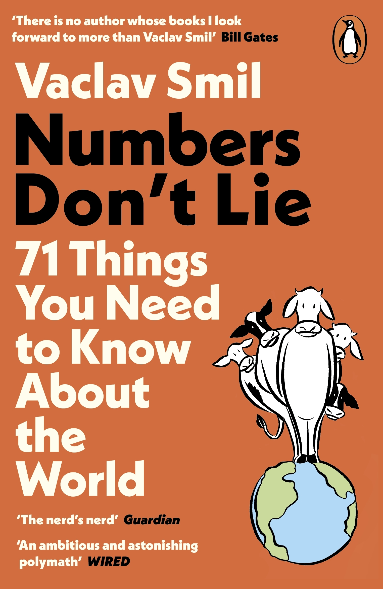

Numbers don't Lie

71 things you need to know about the world
Vaclav Smil
Published: 2020
ChatGPT's summary
Overview:
This book is a collection of 71 short essays that use data and statistics to challenge common assumptions and provide a clearer, fact-based understanding of how the world really works. Smil covers a wide range of topics across energy, environment, population, food production, economics, transportation, and technology.
His core message: "Quantification matters." If you want to make sound decisions or understand the world honestly, you must look at the numbers—not just narratives.
Key Themes & Takeaways:
✅ Energy Rules Everything
- Energy is fundamental to civilization: no energy, no economy.
- Smil emphasizes the dominance of fossil fuels and how difficult it is to transition away from them, even with renewable energy growth.
- Example: A single cow's daily energy consumption (via feed) equals many kilojoules—he uses such comparisons to highlight scale and dependence.
🌍 Population and Growth Myths
- Challenges the belief that constant GDP or population growth is sustainable.
- Advocates for realism over optimism, especially when discussing limits to growth and aging populations in developed countries.
🚗 Transportation and Efficiency
- The internal combustion engine is far less efficient than people realize (\~20–30%).
- Electric cars are more efficient but still face materials and energy supply issues.
- High-speed rail and aviation are discussed with a focus on energy cost per passenger kilometer.
🧂 Food and Agriculture
- Modern food production is highly energy-intensive (especially meat).
- Industrial agriculture depends heavily on fossil fuels and fertilizers.
- He critiques the inefficiency of modern diets and food waste.
📈 Technological Optimism vs. Reality
- Not all technological change is progress.
- Many "revolutions" (e.g. smartphones, AI hype) pale in comparison to older, world-changing innovations like electrification or antibiotics.
- Real technological progress often takes decades, not years.
🧠 Clear Thinking Requires Numbers
- We are often misled by emotion, ideology, or headlines.
- Smil shows that data can reveal surprising truths—like the fact that Japan has higher life expectancy but spends less per capita on healthcare than the U.S.
Tone & Style:
- Witty, skeptical, and grounded.
- Smil doesn’t advocate for utopian futures or fear-mongering; he calls for measured, realistic action based on facts and science.
- He’s known for being brutally honest, often criticizing oversimplified environmental or tech narratives.
Who Should Read It?
- Anyone interested in data-driven thinking, sustainability, public policy, or global trends.
- Great for people who appreciate a no-nonsense, quantitative look at the modern world.